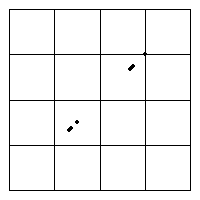

Here are animations illustrating how the DrivenIFS changes are the s parameter of the logistic and tent maps is increased.
|  | |
| The logistic map s value changes from 3.5 to 4 in steps of 0.025. Click the picture to start the animation. | The tent map s value changes from 1.05 to 2 in steps of 0.05. Click the picture to start the animation. |
What patterns do you see?